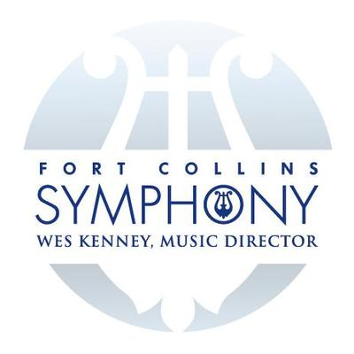

I am currently a software engineering student at the Flatiron School with a background in classical music and education. I have worked in public schools and in higher education while maintaining an active performing life as well.
I am currently a software engineering student at the Flatiron School with a background in classical music and education. I have worked in public schools and in higher education while maintaining an active performing life as well.
I am an Adjunct Professor of Euphonium at the University of Northern Colorado where I teach lessons to undergraduate and graduate students

I am a performing artist with S.E Shires Company and perform on the Q Series euphonium
I have been the Principal Tubist with the Fort Collins Symphony since 2017
